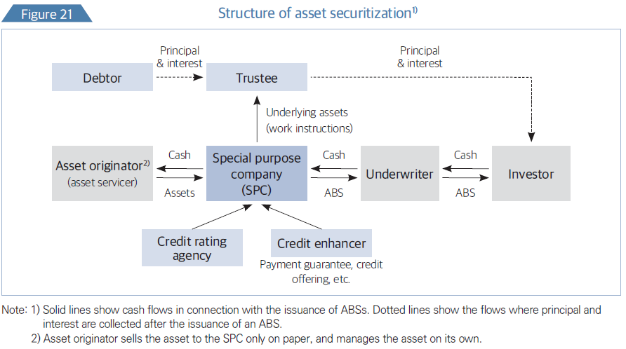
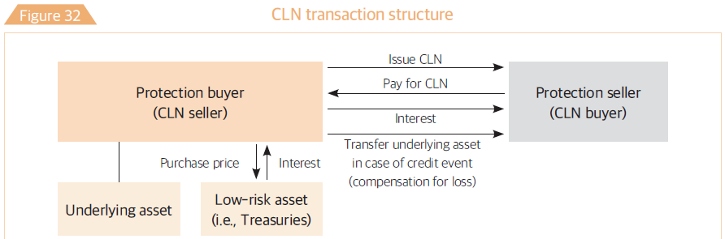

Financial Markets: Part II
BUSS254 Investments
Lecture Outline
- Money markets: Call, Repo, CD, CP, etc.
- Capital markets: Bond, Equity
- Derivatives markets: Futures, options etc.
- Trading mechanisms
- Investment Companies
- Reading: BKM Ch. 1 and 2, “Financial Markets in Korea” Bank of Korea (2022)
Capital Markets
Financial Instruments

Capital Markets
Money market instruments include short-term, marketable, liquid, low-risk debt securities.
Capital markets, in contrast, include longer term and riskier securities.
Securities in the capital market are much more diverse than those found within the money market.
- Bond market: longer term borrowing or debt instruments, fixed-income capital market
- Stock market: corporate ownership is traded
Capital Markets: Size in Korea
Bond Market: Types
- Government & Agency Bonds
- U.S. Treasury Bonds – e.g., 10-Year Treasury Note (widely used as a benchmark rate).
- UK Gilts – e.g., 30-Year Gilt (long-term government bond).
- Korea Treasury Bonds (KTBs) – e.g., 3-Year KTB (actively traded in Korean markets).
- Foreign Exchange Stabilization Fund Bonds – Issued by Korea to manage FX reserves.
- U.S. Treasury Bonds – e.g., 10-Year Treasury Note (widely used as a benchmark rate).
- Municipal Bonds
- New York City General Obligation Bonds – Funds public projects like schools, bridges.
- New York City General Obligation Bonds – Funds public projects like schools, bridges.
- Corporate Bonds
- Apple Inc. Bonds – Issued for corporate expansion and share buybacks.
- Samsung Electronics Bonds – Used for R&D and investment in semiconductor production.
- Apple Inc. Bonds – Issued for corporate expansion and share buybacks.
- Financial Bonds
- JP Morgan Chase Bonds – Bank-issued bonds for liquidity management.
- Korea Development Bank (KDB) Bonds – Supports industrial development.
- JP Morgan Chase Bonds – Bank-issued bonds for liquidity management.
- Special Bonds
- Monetary Stabilization Bonds (MSBs) – Issued by Bank of Korea (BOK) for monetary policy.
- KEPCO Bonds – Issued by Korea Electric Power Corporation to finance energy projects.
- Monetary Stabilization Bonds (MSBs) – Issued by Bank of Korea (BOK) for monetary policy.
Bond Market: Types
- By Market
- Domestic Bonds – Japan Government Bonds (JGBs) issued in yen.
- International Bonds
- Eurobonds – Toyota Eurobond (denominated in USD, issued outside Japan).
- Foreign Bonds – Samurai Bonds (issued in Japan by foreign entities).
- Eurobonds – Toyota Eurobond (denominated in USD, issued outside Japan).
- Domestic Bonds – Japan Government Bonds (JGBs) issued in yen.
- By Security & Guarantee
- Secured Bonds – Mortgage-Backed Securities (MBS) (e.g., Fannie Mae Bonds).
- Unsecured Bonds – Tesla Senior Unsecured Notes.
- Guaranteed Bonds – Korea Deposit Insurance Corporation (KDIC) Bonds.
- Secured Bonds – Mortgage-Backed Securities (MBS) (e.g., Fannie Mae Bonds).
- By Interest Rate & Structure
- Fixed-Rate Bonds – 10-Year U.S. Treasury Bond (pays a fixed yield).
- Floating-Rate Bonds – SOFR-linked Corporate Bonds.
- Zero-Coupon Bonds – STRIPS (Separate Trading of Registered Interest and Principal Securities).
- Coupon Bonds – Coca-Cola Corporate Bonds (pays semi-annual interest).
- Convertible Bonds – Tesla Convertible Bonds (convertible into Tesla stock).
- Bonds with Warrants – Alibaba Bonds with Stock Warrants.
- Exchangeable Bonds – LVMH Exchangeable Bonds (convertible into shares of its subsidiary).
- Fixed-Rate Bonds – 10-Year U.S. Treasury Bond (pays a fixed yield).
Bond Market: Monetary Stabilization Bonds
- Issued by BOK to adjust monetary liquidity
- One of the major tools for open market operations
- 91-day (discount), 1-, 2-, and 3-year (coupon)
: Home loans
- Loans (CLO): Corporate loans
- Bonds (CBO): Corporate bonds
- Credit Card Receivables (CARD): Outstanding balances on credit cards
Transfer of ownership of the underlying assets from the asset originator to a special purpose company/vehicle
2008 Financial Crisis Connection: Complex and poorly understood ABS, particularly those backed by subprime mortgages, played a significant role in the 2008 financial crisis. This highlighted risks associated with ABS, including:
- Complexity: Difficult to assess the true risk of ABS due to their intricate structure.
- Opacity: Lack of transparency in the underlying asset pools.
- Incentive Problems: Originators had weak incentives to properly vet the loans.
Bond Market (cont’d)

Securitization Process involves:
- Asset Transfer: Transferring ownership of the underlying assets from the originator (e.g., a bank) to a Special Purpose Vehicle (SPV) or company.
- SPV: Isolates the assets, bankruptcy remoteness, and allows the SPV to issue new securities backed by those assets.
- Creating Securities: SPV creates and sells new securities (the ABS) to investors. These securities derive their value from the cash flows generated by the underlying assets.
Bond Market: Covered Bonds & Foreign Exchange Stabilization Fund Bond
Covered Bonds
- Similar to Asset-Backed Securities (ABS) but with key differences:
- Cover pool remains on the issuer’s balance sheet (unlike ABS, where assets are transferred to an SPV).
- Investors have dual recourse:
- First, to the issuing financial institution.
- Second, to the underlying asset pool (cover pool) in case of default.
- First, to the issuing financial institution.
- Cover pool remains on the issuer’s balance sheet (unlike ABS, where assets are transferred to an SPV).
- Functions as a corporate bond issued by financial institutions, with an extra layer of protection for investors.
- More common in Europe, especially in Germany (Pfandbriefe), but also in Denmark, France, and Spain.
Foreign Exchange Stabilization Fund Bonds (FESFBs)
- Foreign currency-denominated bonds issued by the Korean government in international bond markets.
- Objectives:
- Establishes benchmark interest rates for Korean bonds in global markets.
- Supports foreign exchange stability by securing external financing.
- Helps manage Korea’s foreign exchange reserves effectively.
- Establishes benchmark interest rates for Korean bonds in global markets.
- Typically issued in USD, EUR, or JPY, providing a reference for Korean corporate and sovereign issuers abroad.
Bond Market: Statistics in Korea
Source: Ministry of Economy and Finance
Bond Markets: Global
Source: Capital Market Factbook - SIFMA, 2024
Bond Markets: Global (cont’d)
Source: Capital Market Factbook - SIFMA, 2024
Bond Markets: Global (cont’d)
Source: Capital Market Factbook - SIFMA, 2024
Stock Markets
Types of Stocks
- Common Stocks
- Represent ownership in a company with a claim on earnings and assets.
- Shareholders have voting rights in corporate decisions.
- Represent ownership in a company with a claim on earnings and assets.
- Preferred Stocks
- Receive dividends before common stockholders.
- Typically have limited or no voting rights.
- May include special features:
- Redeemable Preferred Shares – Can be converted to cash at a set price.
- Convertible Preferred Shares – Can be converted into common stock.
- Redeemable Preferred Shares – Can be converted to cash at a set price.
- Receive dividends before common stockholders.
- Residual Claims in Liquidation
- In case of bankruptcy, common and preferred stockholders receive remaining assets only after debt holders are paid.
Share Classes & Voting Rights
- Companies can issue multiple share classes with different voting rights or privileges.
- Used to preserve control by founders or key shareholders.
- Introduced in Korea in November 2023, allowing companies to issue dual-class shares.
- Example: Google (Alphabet) Class A, B, and C shares with varying voting rights.
Stock Market Trading & Issuance
- Primary Market (New Issuance)
- Private Placements – Shares sold to select investors (e.g., institutions, venture capital).
- Initial Public Offering (IPO) – A company’s first public stock sale.
- Seasoned Equity Offering (SEO) – Additional stock issuance by a publicly traded company.
- Private Placements – Shares sold to select investors (e.g., institutions, venture capital).
- Secondary Market (Trading)
- Stocks are bought and sold on exchanges or OTC markets.
- Major stock exchanges:
- New York Stock Exchange (NYSE), NASDAQ, Korea Exchange (KRX).
- OTC markets handle smaller or less regulated securities.
- New York Stock Exchange (NYSE), NASDAQ, Korea Exchange (KRX).
- Stocks are bought and sold on exchanges or OTC markets.
Stock Markets: Exchanges
Korea Exchange (KRX)
- KOSPI (Korea Composite Stock Price Index): Established in 1956, serving as the main board for large-cap companies.
- KOSDAQ (Korea Securities Dealers Automated Quotations): Launched in 1996, focusing on technology and growth-oriented firms.
- KONEX (Korea New Exchange): Introduced in 2013 to facilitate funding for Small and Medium Enterprises (SMEs).
- K-OTC (Korea Over-the-Counter Market): Started in 2014, providing a platform for trading unlisted stocks.
Nextrade (NXT) – Korea’s New Alternative Exchange (2025)
- Extended Trading Hours: 8:00 a.m. – 8:00 p.m. (KRX: 9:00 a.m. – 3:30 p.m.).
- Lower Transaction Fees: 20–40% cheaper than KRX.
- Smart Order Routing (SOR): Brokers auto-direct orders for best prices.
- New Order Types: Includes mid-price orders and stop-limit orders.
Stock Markets: Trends
Stock Markets: Performance
Stock Markets: Global Issuance
Source: Capital Market Factbook - SIFMA, 2024
Stock Markets: Market Capitalization
Source: Capital Market Factbook - SIFMA, 2024
Stock Markets: Financing by Country

Source: Capital Market Factbook - SIFMA, 2023
Stock Markets: Cross-listing
The practice of listing a company’s equity shares on one or more foreign exchanges.
The number of cross-listed firms has grown rapidly, now representing about 10% of publicly traded companies worldwide.
The primary motivation for cross-listing is to reduce the firm’s cost of capital by increasing investor access and improving liquidity.
Types of Cross-listing
- Direct Listing
- A company lists its shares on a foreign exchange without issuing new equity.
- Requires compliance with the listing regulations of the foreign exchange.
- Depositary Receipts (DRs)
- A financial instrument representing shares of a foreign company, held in custody by a domestic bank.
- Enables investors to trade foreign stocks more easily on their home market.
- Direct Listing
Types of Depositary Receipts: American Depositary Receipts (ADRs), European Depositary Receipts (EDRs), Global Depositary Receipts (GDRs), Indian Depository Receipts (IDRs)
Stock Market Indices
A hypothetical portfolio representing a segment of the financial market.
Used as a barometer of market performance and an investment benchmark.
Key Uses of Stock Market Indices:
- Market performance measurement: Indicates overall stock market trends.
- Performance benchmarking: Compares the returns of money managers and funds.
- Passive investment strategies: Forms the basis for index funds, ETFs, and passive portfolio management.
- Foundation for derivatives: Many futures, options, and swaps are based on stock indices.
Types of Stock Market Indices: Indices vary based on:
- Market representation: Sector-based, regional, size-based indices, etc.
- Weighting schemes: Market-cap weighted, price-weighted, equal-weighted, etc.
Stock Market Indices (cont’d)
- Price-Weighted Index
- Each company’s stock is weighted by its price per share, and the index is an average of the share prices of all the companies.
- Greater weight is given to stocks with higher prices.
- Initially, this is similar to investing in equal numbers of shares of each stock, but weighting changes over time due to stock splits and price fluctuations.
- Examples: DJIA, Nikkei 225.
- Market Value-Weighted Index
- Individual components are weighted according to their relative total market capitalization.
- Most indices use free-floating market capitalization, meaning they consider only shares available for public trading rather than total market capitalization.
- Companies with higher market capitalization receive a higher weighting in the index.
- Investing in proportion to market value (buy-and-hold).
- Examples: S&P 500, NASDAQ, KOSPI, KOSDAQ.
- Individual components are weighted according to their relative total market capitalization.
- Equal-Weighted Index
- Each stock is assigned an equal weight, meaning the index value is the simple arithmetic average of stock returns.
- Investing equal dollar values in each stock requires continuous rebalancing.
- Examples: S&P 500 Equal Weight, MSCI Equal Weight.
Stock Market Indices: Example
| Stock | P1 | Q1 | P2 (No split) | Q2 (No split) | P2 (Split) | Q2 (Split) |
|---|---|---|---|---|---|---|
| A | \(10\) | \(40\) | \(15\) | \(40\) | \(15\) | 40$ |
| B | \(50\) | \(80\) | \(50\) | \(80\) | \(25\) | 160$ |
| C | \(140\) | \(50\) | \(150\) | \(50\) | \(150\) | 50$ |
Price-Weighted Index
- Day 1: \((10+50+140)/3=66.67\)
- Day 2 - No split: \((15+50+150)/3=71.67\)
- Day 2 - Split:
- Find \(d\) such that \((10+25+140)/d=66.67\), solving for \(d\) gives \(d=2.625\).
- Then, \((15+25+150)/2.625=72.38\)
- \(d\) is called the Dow Divisor, which is continuously adjusted for corporate actions such as dividend payments and stock splits.
- As of December 2021, the divisor for DJIA is \(0.15172752595384\).
- With a stock split, the change in the index does not represent the actual investment outcome of holding one share of each stock: \(72.38/66.67=8.57\%\neq71.67/66.67=7.5\%\)
Stock Market Indices: Example (cont’d)
| Stock | P1 | Q1 | P2 (No split) | Q2 (No split) | P2 (Split) | Q2 (Split) |
|---|---|---|---|---|---|---|
| A | \(10\) | \(40\) | \(15\) | \(40\) | \(15\) | 40$ |
| B | \(50\) | \(80\) | \(50\) | \(80\) | \(25\) | 160$ |
| C | \(140\) | \(50\) | \(150\) | \(50\) | \(150\) | 50$ |
Market Value-Weighted Index
- Day 1: \((400+4,000+7,000)=11,400\)
- Day 2: \((600+4,000+7,500)=12,100\)
- Using Day 1 as the base year (e.g., setting it equal to 100)
- Day 2 index: \(12,100/11,400\times100=106.14\)
- If you invest in proportion to market value (i.e., 3.50% in A, 35.07% in B, and 61.40% in C), the return is: \(3.50\%\times(600/400-1)+35.07\%\times(4,000/4,000-1)+61.40\%\times(7,500/7,000-1)=6.14\%\)
Stock Market Indices (cont’d)
| Stock | P1 | Q1 | P2 (No split) | Q2 (No split) | P2 (Split) | Q2 (Split) |
|---|---|---|---|---|---|---|
| A | \(10\) | \(40\) | \(15\) | \(40\) | \(15\) | 40$ |
| B | \(50\) | \(80\) | \(50\) | \(80\) | \(25\) | 160$ |
| C | \(140\) | \(50\) | \(150\) | \(50\) | \(150\) | 50$ |
Equal-Weighted Index
Day 1: Base year, set it equal to 100.
Day 2: \(\left(\frac{1}{3}\times\frac{600}{400}+\frac{1}{3}\times\frac{4,000}{4,000}+\frac{1}{3}\times\frac{7,500}{7,000}\right)\times100=119.04\)
If you invest an equal amount (e.g., \(700\)) in each stock, meaning 70 shares of A, 14 shares of B, and 5 shares of C, the return is: \(\frac{1}{3}\times\left(\frac{600}{400}-1\right)+\frac{1}{3}\times\left(\frac{4,000}{4,000}-1\right)+\frac{1}{3}\times\left(\frac{7,500}{7,000}-1\right)=19.04\%\)
When using market-value weighting, large-cap stocks are overweighted.
When using equal weighting, small-cap stocks are overweighted.
Bond Market Indices
- Bond market indices track the performance of a portfolio of bonds, serving as benchmarks for bond investors.
- Investors use bond indices to assess interest rate movements, credit risk, and overall bond market performance.
- Unlike stock indices, which rely on frequently traded prices, bond indices face challenges due to infrequent trading and pricing difficulties.
Well-Known Bond Market Indices
- Bloomberg Barclays Bond Indices:
- Covers government, corporate, and municipal bonds across different maturities and risk levels.
- Examples: Bloomberg U.S. Aggregate Bond Index, Bloomberg Global Aggregate Index.
- Covers government, corporate, and municipal bonds across different maturities and risk levels.
- ICE BofA (Merrill Lynch) Bond Indices:
- Tracks corporate and government bonds, commonly used for high-yield and investment-grade bonds.
- Example: ICE BofA U.S. High Yield Index.
- Tracks corporate and government bonds, commonly used for high-yield and investment-grade bonds.
- FTSE Russell Bond Indices (Citi):
- Offers broad and sector-specific bond benchmarks.
- Example: FTSE World Government Bond Index (WGBI).
- Offers broad and sector-specific bond benchmarks.
- S&P Dow Jones Fixed Income Indices:
- Includes indices such as the S&P U.S. Treasury Bond Index and S&P Muni Bond Index.
Challenges in Bond Market Indices
- Infrequent Trading:
- Unlike stocks, bonds are often traded over-the-counter (OTC) and do not have centralized exchanges.
- Many bonds are bought and held by institutional investors, resulting in fewer transactions.
- Unlike stocks, bonds are often traded over-the-counter (OTC) and do not have centralized exchanges.
- Price Estimation Issues:
- Since many bonds do not trade daily, index providers estimate bond prices using models, dealer quotes, or matrix pricing.
- Matrix pricing estimates a bond’s value based on yields of similar bonds.
- Since many bonds do not trade daily, index providers estimate bond prices using models, dealer quotes, or matrix pricing.
- Return Calculation Complexity:
- Unlike stocks, bond returns depend on interest payments, price changes, and reinvestment of coupon payments.
- Many bonds have embedded options (callable, putable), making valuation more complex.
- Unlike stocks, bond returns depend on interest payments, price changes, and reinvestment of coupon payments.
How Are Bond Market Indices Computed?
Step 1: Selection of Bonds
- The index provider selects a set of bonds based on criteria such as:
- Issuer (government, corporate, municipal)
- Credit rating (investment grade, high yield)
- Maturity (short-term, medium-term, long-term)
- Currency denomination (USD, EUR, JPY, etc.)
Step 2: Weighting Methodology
- Market Value-Weighted (Most Common)
- Bonds with larger outstanding amounts have greater influence on the index.
- Example: Bloomberg U.S. Aggregate Bond Index.
- Bonds with larger outstanding amounts have greater influence on the index.
- Equal-Weighted
- All bonds have the same weight, regardless of their market size.
- Less common but used in some specialized indices.
- All bonds have the same weight, regardless of their market size.
- Duration-Weighted
- Adjusts weights based on a bond’s sensitivity to interest rate changes.
Step 3: Price and Yield Estimation
- Since bonds do not always trade daily, prices are estimated using:
- Last trade prices (if available).
- Dealer quotes from financial institutions.
- Matrix pricing (estimating prices based on similar bonds).
Step 4: Return Calculation
- Total Return Formula (includes both price changes and interest income):
\[ \text{Total Return} = \frac{P_{\text{end}} - P_{\text{start}} + C}{P_{\text{start}}} \] where:- \(P_{\text{start}}\) = Bond price at the beginning of the period.
- \(P_{\text{end}}\) = Bond price at the end of the period.
- \(C\) = Coupon payment received.
Example: Bloomberg U.S. Aggregate Bond Index
- Composition:
- Includes U.S. government bonds, mortgage-backed securities, and corporate bonds.
- Weighted by market capitalization.
- Performance Calculation Example:
- Suppose the index starts at 100.
- A corporate bond in the index has:
- Initial price: \(98\)
- Final price: \(100\)
- Coupon payment: \(3\)
- Total Return Calculation: \[ \left(\frac{100 - 98 + 3}{98} \right) \times 100 = 5.10\% \]
- If the overall index return averages 5%, the index value would increase from 100 to 105.
Derivatives Markets
Derivatives Markets
- Financial contracts whose value is derived from an underlying asset.
- Used for hedging, speculation, and arbitrage.
- Traded in two main markets:
- Exchange-traded derivatives (ETDs): Standardized contracts traded on formal exchanges (e.g., CME, KRX).
- Over-the-counter (OTC) derivatives: Customized contracts traded directly between parties; OTC markets are much larger.
Types of Derivatives
- Forwards & Futures:
- An agreement to buy/sell an underlying asset at a specified future date for a predetermined price.
- Forwards: Custom contracts traded OTC.
- Futures: Standardized contracts traded on exchanges (e.g., S&P 500 futures, KOSPI 200 futures).
- Options:
- Buyers have the right, but not the obligation, to buy (call option) or sell (put option) an asset at a predetermined price before or at expiration.
- European options: Exercisable only at expiration.
- American options: Exercisable anytime before expiration.
- Warrants: Long-term options issued by a company.
- Swaps:
- Contracts in which two parties exchange cash flows or financial instruments over time.
- Common types:
- Interest rate swaps: Exchange of fixed-rate and floating-rate payments.
- Currency swaps: Exchange of payments in different currencies.
- Credit default swaps (CDS): A form of insurance against bond default.
Derivatives Market in Korea: Historical Development
| Year | Event |
|---|---|
| May 1996 | KOSPI 200 futures introduced, marking the start of Korea’s exchange-traded derivatives market. |
| July 1997 | KOSPI 200 options launched, quickly becoming one of the most actively traded derivatives globally. |
| January 2001 | KOSDAQ 50 futures introduced (renamed KOSDAQ 150 futures in 2015). |
| November 2001 | KOSDAQ 50 options launched, providing additional hedging and speculation opportunities. |
| January 2002 | Single stock options introduced, allowing investors to trade options on individual stocks. |
| May 2008 | Single stock futures launched, enabling futures trading on specific company stocks. |
| March 2018 | Mini KOSPI 200 futures introduced (1/5 the size of KOSPI 200 futures contracts). |
| March 2018 | KRX 200 futures introduced as an expanded market index derivative. |
Additional Insights: Global vs. Korean Derivatives Market
- KOSPI 200 options were at one point the world’s most actively traded derivative contract due to heavy retail investor participation (2000s–Early 2010s).
- Korea’s derivatives market has evolved to reduce excessive speculation by implementing trading restrictions and transaction taxes (2014).
- Compared to global derivatives markets:
- U.S. & Europe: Heavily institutional participation, with a focus on hedging.
- Korea & China: Historically, high retail investor involvement.
- Emerging markets: Increasing adoption of exchange-traded derivatives to develop capital markets.
Example: How a Derivative Works
Hedging with KOSPI 200 Futures
- An institutional investor holds a ₩10 billion portfolio tracking the KOSPI 200 index.
- They fear a short-term market decline and short 100 KOSPI 200 futures contracts to hedge their position.
- If the KOSPI 200 index drops by 5%, their stock portfolio loses ₩500 million, but their short futures position gains ₩500 million, offsetting the loss.
- This strategy allows the investor to protect their portfolio without selling their stocks.
Derivatives Markets: Futures
Derivatives Markets: KOSPI Futures vs. KOSPI
Derivatives Markets: Other Countries
Derivatives Markets: Size
Source: Capital Market Factbook - SIFMA, 2024
Derivatives Markets: Interest Rate Derivatives
Interest Rate Futures
- CD Futures: Introduced in April 1999, but delisted in December 2007 due to low trading volumes.
- 3-Year KTB Futures: Launched in September 1999, tracking Korean Treasury Bonds (KTBs).
- MSB Futures: Introduced in December 2002, but delisted in February 2011.
Interest Rate Swaps (IRS)
- A contract between two parties to exchange interest payment obligations, typically fixed-rate vs. floating-rate payments.
- Maturity: Ranges from 3 months to 20 years, with 1- to 5-year swaps being the most actively traded.
- Developed as an OTC market in 1999, with significant growth post-2005, driven by increasing institutional demand.
Derivatives Markets: Currency Derivatives
Currency Swaps
- A contract where two parties exchange principal and interest payments on loans denominated in different currencies.
- Used for hedging currency risk and lowering financing costs.
- Maturity: Typically 3 months to 20 years, with 1- to 5-year swaps being the most liquid.
- First currency swap in Korea: Conducted OTC in September 1999, marking the start of a growing swap market.
Forward Contracts on Currency
- Outright Forward:
- A commitment to exchange a specific amount of currency at a fixed rate on a future date.
- Can be deliverable (physical exchange of currency) or non-deliverable (NDF) (cash-settled based on exchange rate differences).
- A commitment to exchange a specific amount of currency at a fixed rate on a future date.
- Forward Exchange Swap:
- A combination of a spot transaction and a forward contract, allowing investors to roll over foreign exchange exposure efficiently.
- Commonly used for corporate hedging and carry trade strategies.
- A combination of a spot transaction and a forward contract, allowing investors to roll over foreign exchange exposure efficiently.
Derivatives Markets: Currency Derivatives

Derivatives Markets: Credit Derivatives
Credit Derivatives
- Financial instruments that allow the separation and transfer of credit risk from an underlying asset between a protection buyer and a protection seller.
- Used for hedging credit exposure, enhancing yields, and speculating on credit risk.
- Requires precise definitions of:
- Credit events (e.g., default, bankruptcy, credit downgrade).
- Timing of credit risk transfer.
Types of Credit Derivatives
- Credit Default Swap (CDS)
- A contract where the protection seller compensates the protection buyer if the reference entity experiences a credit event.
- Commonly used to hedge against default risk on bonds and loans.
- A contract where the protection seller compensates the protection buyer if the reference entity experiences a credit event.
- Total Return Swap (TRS)
- A swap where one party receives the total return (price appreciation + interest/coupon payments) of an underlying credit asset, while the other receives a fixed or floating payment.
- Transfers both credit risk and market risk between counterparties.
- A swap where one party receives the total return (price appreciation + interest/coupon payments) of an underlying credit asset, while the other receives a fixed or floating payment.
- Credit-Linked Notes (CLNs)
- A structured bond where the principal repayment is contingent on the credit performance of a reference entity.
- Equivalent to a bond combined with a short CDS position.
- Investors take on credit risk in exchange for higher yields.
- A structured bond where the principal repayment is contingent on the credit performance of a reference entity.
- Synthetic Collateralized Debt Obligation (Synthetic CDO)
- A structured product that pools CDS contracts instead of actual bonds or loans.
- Investors gain exposure to diversified credit risks while earning returns based on the underlying CDS premiums.
- Used for leveraging credit exposure without direct asset ownership
- A structured product that pools CDS contracts instead of actual bonds or loans.
Derivatives Markets: CDS and TRS
Derivatives Markets: CLN and CDO

Derivatives Markets: CDS Premium
Derivatives Markets: Size
Derivatives Markets: Derivative-linked securities
- Financial products whose returns are tied to underlying assets, including stocks, interest rates, currencies, and commodities.
1. Equity-Linked Warrants (ELWs)
- Introduced in 2005
- Similar to stock options but without daily margin settlement.
- Allows investors to gain exposure with a small initial investment.
- Primarily used for short-term speculation and leverage.
Derivatives Markets: Derivative-linked securities
2. Equity-Linked Securities (ELS)
- Introduced in 2003
- Structured financial products linked to equities or indices.
- Offers a wide range of payoff structures, such as:
- Autocallable ELS: Provides early redemption if conditions are met.
- Principal-Protected ELS: Guarantees initial investment if held to maturity.
- Leveraged ELS: Enhances returns with embedded derivatives.
- Autocallable ELS: Provides early redemption if conditions are met.
Derivatives Markets: Common ELS Payoff Structure
Derivatives Markets: Derivative-linked securities
3. Debt-Linked Securities (DLS)
- Introduced in 2005
- Tied to interest rates, foreign exchange rates, commodity prices, and credit events.
- Primarily used by institutional investors for risk management and yield enhancement.
Derivatives Markets: Derivative-linked securities
4. Exchange-Traded Notes (ETNs)
- Introduced in 2014
- Hybrid between derivatives and fixed-income products:
- ELWs behave like options.
- ELS/DLS behave like fixed-income securities.
- ETNs behave like ETFs but without actual asset ownership.
- ELWs behave like options.
Derivatives Markets: Comparison of Derivative-Linked Products
| Type | Underlying Assets | Issuer | Features |
|---|---|---|---|
| ELS | Individual stocks, indices | Securities firms | Structured equity exposure |
| DLS | Interest rates, FX, commodities | Securities firms | Linked to non-equity assets |
| ELT | Stocks, indices | Banks | Similar to ELS but bank-issued |
| DLT | Interest rates, FX, commodities | Banks | Similar to DLS but bank-issued |
| ELF | Stocks, indices | Asset management firms | Fund-based structured products |
| DLF | Interest rates, FX, commodities | Asset management firms | Fund-based debt-linked investments |
| ELD | Stocks, indices | Banks | Principal-protected deposits |
| DLD | Interest rates, FX, commodities | Banks | Principal-protected deposits |
| Options | Any tradable asset | Anyone | Direct derivative contracts |
| Warrants | Individual stocks | Issued by companies | Stock purchase rights |
| ELW | Individual stocks, indices | Securities firms | Similar to options but no margin calls |
| ETN | Various asset classes | Securities firms | Trade like ETFs but unsecured debt |
| ETF | Various asset classes | Asset management firms | Fund with underlying asset ownership |
Derivatives Markets: Comparison of Derivative-Linked Products
E: individual stocks or indices
D: forex, gold, credit, etc.
ELS and DLS: issued by securities companies
ELT and DLT: issued by banks
ELF and DLF: issued by asset managment companies
ELD and DLD: principal protected
Options (anyone), Warrants (Companies), ELW (securities companies)
ETN (securities companies), ETF (funds)
Risk/Return Characteristics of Securities
Understanding Risk and Return
- Financial securities exhibit different risk-return profiles, which are central to asset allocation decisions.
- Risk and return trade-off: Investors demand higher returns for higher risks over the long run.
Risk/Return Characteristics of Securities
Factors Affecting the Risk of a Security
- Maturity of the Security
- Longer-term securities generally carry higher risk due to interest rate fluctuations and uncertainty.
- Example: 30-year bonds are riskier than 1-year Treasury bills.
- Longer-term securities generally carry higher risk due to interest rate fluctuations and uncertainty.
- Credit Quality of the Issuer
- Issuers with lower credit ratings offer higher yields but come with default risk.
- Example: U.S. Treasury bonds (AAA-rated, low risk) vs. junk bonds (BB-rated or lower, high risk).
- Issuers with lower credit ratings offer higher yields but come with default risk.
- Priority Over Income and Assets
- Senior debt is repaid first in bankruptcy, making it safer than subordinated debt or equity.
- Example: Common stock is riskier than corporate bonds because bondholders are paid first.
- Senior debt is repaid first in bankruptcy, making it safer than subordinated debt or equity.
- Liquidity
- More liquid assets can be easily bought or sold without affecting their price.
- Example: Large-cap stocks (Apple, Microsoft) are highly liquid, while small-cap stocks or private debt may have limited liquidity.
- More liquid assets can be easily bought or sold without affecting their price.
Risk/Return Characteristics of Securities
Risk and Return Relationship
- Higher risk should be compensated with higher expected returns over the long term.
- Typical return hierarchy (from lowest to highest risk/return):
- Government Bonds (low risk, low return)
- Investment-Grade Corporate Bonds
- High-Yield Bonds (Junk Bonds)
- Large-Cap Stocks
- Small-Cap Stocks
- Private Equity / Venture Capital (high risk, high return)
- Government Bonds (low risk, low return)
Risk vs. Return
Source: BNP Paribas